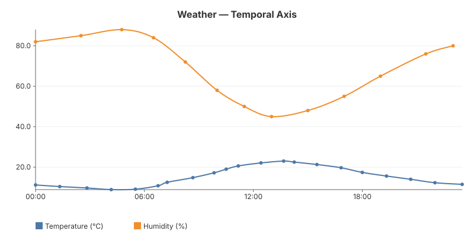
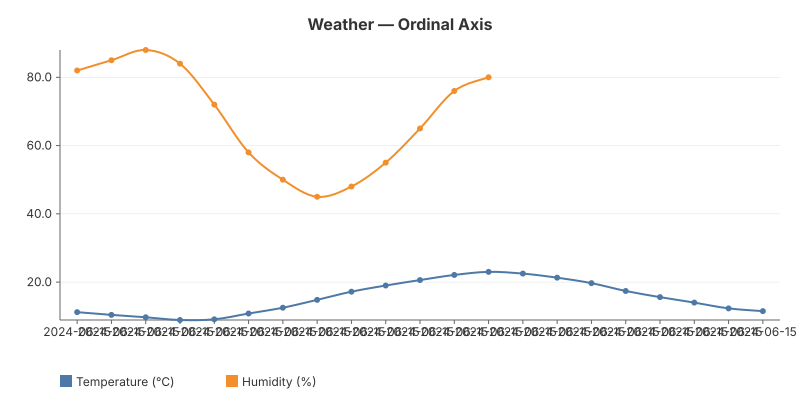

03 — Multi-Series
Multiple data series on one chart with automatic colour cycling and legend. The two sensors sample at different rates (temperature ~hourly, humidity ~2-hourly) so the series have different point counts. This example compares two axis modes: Temporal (X proportional to time, gaps visible) and Ordinal (equal spacing by index).


The code
Adding multiple series is just multiple Add() calls. Colours cycle through the theme palette automatically.
chart := gogal.NewLineChart(
gogal.WithVariant(gogal.Static),
gogal.WithAxisMode(gogal.Temporal),
gogal.WithTitle("Weather — Temporal Axis"),
gogal.WithGrid(true),
gogal.WithTooltips(true),
gogal.WithSmooth(true),
gogal.WithTimeFormat("15:04"),
)
chart.Add("Temperature (°C)", temp)
chart.Add("Humidity (%)", humidity)
Colour cycling — each
Add() call gets the next colour from the theme palette (10 colours). The legend appears automatically when there are 2+ series.
gogal.Temporal (default) — X positions are proportional to wall-clock time. If your data has a 6-hour gap, the chart shows that gap. Use this when time relationships matter.
gogal.Ordinal — X positions are equally spaced by event index. The 1st data point is at the left edge, the last at the right, regardless of timestamps. Use this when you care about sequence, not absolute time.
Running it
task example:03
Serves both charts at http://localhost:1342.
API reference
| Function | Purpose |
|---|---|
chart.Add(name, points) |
Add a named series (call multiple times) |
WithAxisMode(gogal.Temporal) |
Time-proportional X spacing (default) |
WithAxisMode(gogal.Ordinal) |
Equal X spacing by index |
theme.SeriesColor(i) |
Get colour for series index i |
Data
Temperature (21 readings)
| Time | °C |
|---|---|
| 00:00 | 11.2 |
| 01:20 | 10.4 |
| 02:50 | 9.7 |
| 04:10 | 8.9 |
| 05:30 | 9.1 |
| 06:45 | 10.8 |
| 07:15 | 12.5 |
| 08:40 | 14.8 |
| 09:50 | 17.2 |
| 10:30 | 19.0 |
| 11:10 | 20.6 |
| 12:25 | 22.1 |
| 13:40 | 23.0 |
| 14:15 | 22.5 |
| 15:30 | 21.3 |
| 16:50 | 19.7 |
| 18:00 | 17.4 |
| 19:20 | 15.6 |
| 20:40 | 14.0 |
| 22:00 | 12.3 |
| 23:30 | 11.5 |
Humidity (13 readings)
| Time | % |
|---|---|
| 00:00 | 82 |
| 02:30 | 85 |
| 04:45 | 88 |
| 06:30 | 84 |
| 08:15 | 72 |
| 10:00 | 58 |
| 11:30 | 50 |
| 13:00 | 45 |
| 15:00 | 48 |
| 17:00 | 55 |
| 19:00 | 65 |
| 21:30 | 76 |
| 23:00 | 80 |